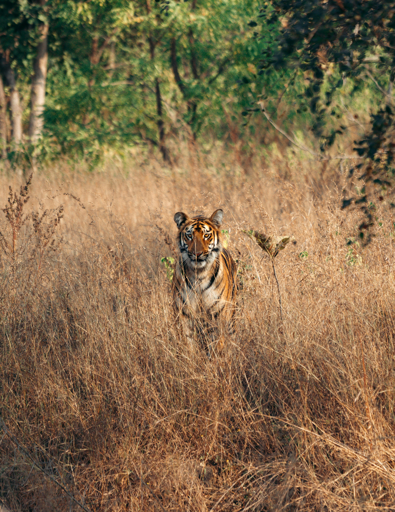

Explore the serene hills of Munnar and the timeless beauty of Kerala
Munnar
Munnar, a serene hill station nestled in Kerala’s Idukki district, sits gracefully at an altitude of 1,600 meters above sea level. One of Kerala’s most beloved travel destinations, Munnar offers breathtaking views that seem straight out of a dream. With rolling hills draped in emerald-green tea gardens, mist-veiled valleys, cascading waterfalls, and the crisp scent of mountain air, this land feels like a painting come to life.
The name Munnar itself means “three rivers” in Malayalam — a fitting tribute to its location at the confluence of the Muthirapuzha, Nallathanni, and Kundala streams. A. H. Sharp, a pioneer among planters, planted the first tea crops in 1880, leading to its signature identity: endless hills blanketed in tea plantations. The **Tea Museum** preserves this rich legacy. Munnar is also famous for the rare **Neelakurinji** bloom that happens once every twelve years. The **Eravikulam National Park**, home to the endangered **Nilgiri Tahr**, offers the perfect vantage point. Within the park stands **Anamudi Peak**, South India’s tallest mountain. Nearby attractions include Mattupetty Dam, Pallivasal, and the panoramic **Top Station**. Munnar remains a timeless haven of peace — a place where the mist, the mountains, and the melody of nature come together to soothe the soul.
Munnar Highlights
Tea Plantation and Waterfalls
Trekking & Nature Walk
Eravikulam National Park
Best Time: Oct-Nov-Jan-May
Kovalam Beach: Sun, Sand & Serenity
Experience the famous coastline of Kerala
Kovalam Beach
Kovalam Beach is where Kerala’s coastal magic truly comes alive. Once a sleepy fishing village, it has evolved into a world-class seaside retreat that perfectly blends serenity and adventure. The crescent-shaped coastline, divided into Lighthouse Beach, Hawah Beach, and Samudra Beach, offers something for every soul — from early morning yoga by the waves to fiery sunsets that paint the horizon in shades of gold and crimson.
The iconic red-and-white striped **lighthouse** at Vizhinjam stands as a proud guardian of the shore, offering panoramic views of the endless blue expanse. The gentle sea breeze carries the scent of coconut palms and the soft hum of waves, creating an atmosphere that feels both soothing and alive. Whether you’re savoring fresh seafood at a beachfront café, watching fishermen haul in their morning catch, or simply walking barefoot on the warm sands, Kovalam has a way of slowing down time — reminding you that paradise isn’t found, it’s felt.
Kovalam Highlights
Lighthouse Beach & Samudra Beach
Surfing & Water Sports
Fresh Seafood & Beach Cafés
Best Time: Sep–Mar
Athirapally: The Niagara of India
Experience the majestic waterfall and surrounding forests
Athirapally
Nestled in the lush greenery of Kerala’s Thrissur district, Athirappilly is home to the spectacular **Athirappilly Waterfalls**, cascading from a height of 80 feet and earning the nickname “Niagara of India.” Surrounded by dense tropical forests, this natural wonder offers a perfect blend of adventure and tranquility. Visitors can enjoy the mesmerizing roar of the falls, stroll along forest trails, spot exotic birds and wildlife, or simply soak in the serene beauty of the misty landscapes. Athirappilly is a paradise for nature lovers, photographers, and anyone seeking to reconnect with the soul of God’s Own Country.
Athirapally Highlights
Athirappilly Waterfalls
Lush Green Forest Trails
Wildlife & Bird Watching
Best Time: Jun–Feb
Kumarakom: Backwater Bliss
Discover the serene backwaters of Kumarakom
Kumarakom
Kumarakom, located on the banks of **Vembanad Lake**, is a tranquil haven of backwaters, lush paddy fields, and swaying coconut palms. Kumarakom is a cluster of small islands on the Vembanad Lake, Kerala’s largest lake. Known for its tranquil backwaters, it offers an unmatched experience of nature and relaxation. The village is surrounded by lush paddy fields, coconut groves, and calm waters, making it perfect for those looking to escape city life.
Famous for its **houseboats**, visitors can glide through the calm waters, witnessing the everyday life of village communities and the rich flora and fauna along the shores. The **Kumarakom Bird Sanctuary** attracts migratory birds, making it a paradise for birdwatchers and nature enthusiasts. With its peaceful ambiance, beautiful sunsets, and traditional Kerala experiences, Kumarakom is the perfect escape for relaxation and rejuvenation.
Kumarakom Highlights
Backwater Houseboat Cruises
Lush Paddy Fields & Coconut Groves
Bird Watching at Kumarakom Bird Sanctuary
Best Time: Sep–Mar

Periyar Wildlife Reserve
Discover the untamed jungles of Thekkady
Periyar Tiger Reserve
Periyar Tiger Reserve, located in **Thekkady**, Kerala, is one of India’s most famous wildlife sanctuaries. It’s home to tigers, elephants, leopards, and a wide variety of birds. Periyar Tiger Reserve is not just about tigers; it’s a treasure trove of wildlife. The sanctuary is home to **elephants, leopards, wild boars, sambar deer, gaurs**, and a variety of monkeys. The lush forests are alive with birds such as Malabar hornbills, kingfishers, and paradise flycatchers, making it a birdwatcher’s paradise. The reserve’s dense greenery provides natural habitats for reptiles, butterflies, and even elusive nocturnal animals.
Guided treks and boat rides on **Periyar Lake** give you a chance to observe animals in their natural habitat, hear the calls of the wild, and feel the thrill of the forest. Every season brings a new spectacle—the monsoon fills the streams and waterfalls, attracting herds of elephants, while the dry season reveals animals gathering at watering points. It’s an ideal destination for wildlife photography, nature enthusiasts, and anyone seeking the serene yet thrilling beauty of India’s tropical forests. The reserve is also known for its scenic Periyar Lake, surrounded by lush forests and spice plantations. Visitors can enjoy guided wildlife safaris, bamboo rafting, trekking, and boat rides, making it an adventure-filled yet serene destination.
Periyar Highlights
Tiger & Wildlife Safari
Boating on Periyar Lake
Guided Forest Trails & Nature Walks
Bird Watching & Photography
Best Time: Oct–May
Bekal Fort: History on the Coast
Discover Kerala's largest and best-preserved fort
Bekal Fort
Bekal Fort is one of Kerala’s most iconic historical landmarks, located in the Kasaragod district along the Arabian Sea. Built in the 17th century by the Keladi rulers, this massive seaside fort stretches over 4 acres and is known for its strategic architecture, including watchtowers, observation points, and an impressive well-planned fortification.
The fort offers breathtaking panoramic views of the sea, making it a favorite spot for photographers and travelers alike. Its walls and bastions, partially covered by the greenery and coconut trees, give a sense of stepping back in time. The calm beaches surrounding Bekal Fort are perfect for evening strolls, and the fort itself has been featured in several films due to its cinematic backdrop.
Visitors can explore the fort’s hidden tunnels, old cannons, and stone structures, all of which tell tales of Kerala’s rich maritime and military history. Bekal Fort is not just a historical site—it’s a blend of nature, history, and serenity, making it a must-visit destination in Kerala.
.jpg)
.jpg)